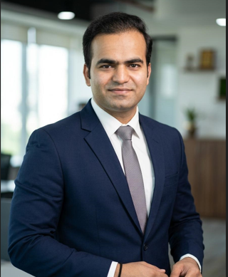

Seasoned IT Professional with 11+ years of experience and 4+ years dedicated to DevOps methodologies and cloud infrastructure. Experienced in Azure Cloud, Kubernetes (AKS), Terraform, Docker, CI/CD Pipelines, Monitoring and Automation.
Strong background in Infrastructure as Code (IaC), Cloud Operations, Containerization, Linux Administration, Observability and DevOps Best Practices.
Role: Technical Lead / DevOps Engineer
Role: Sr Software Test Engineer / DevOps
B.Tech in Electronics & Communication Engineering
RTU, Rajasthan